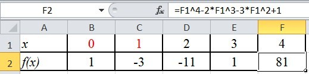
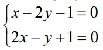
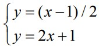
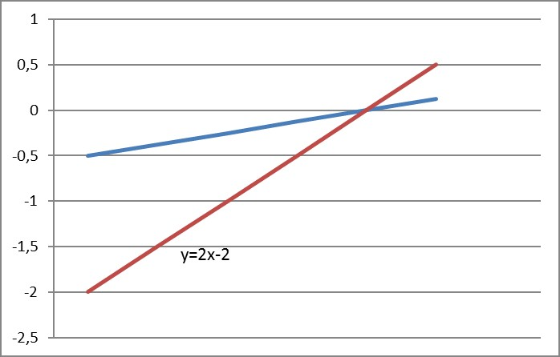

17-DARS. MS EXCEL YORDAMIDA BA’ZI MASALALARNI YECHISH
MS Excel 2010 yordamida tenglama va tenglamalar sistemasini grafik usulda yechish imkoniyati mavjud. Buning uchun tenglamalar yoki tenglamalar sistemasini funksiyalar ko‘rinishiga keltriladi. Grafikni tahlil qilish orqali tenglamalarning taqribiy yechimlari aniqlanadi.
1-mashq. x4-2x3-3x2+1=0 tenglama yechimlar yotgan oralig‘ini toping.
Bajarish:
• A1 katakka x, A2 ga f(x) kiritiladi;
• B1:F1 da x ning qiymatlari kiritiladi;
• B2 quyidagi formulani kiritamiz: =B1^4-2*B1^3-3*B1^2+1;
• C2:F2 blokdagi kataklarga yuqoridagi formulaning nusxasi ko‘chiriladi. Natijada quyidagi jadval hosil bo‘ladi:

Jadvaldan qaralayotgan tenglamaning yechimi (0;1) va (2;3) oraliqlarda ekanligi ma’lum bo‘ldi. Qaralayotgan oraliqni yanada maydalash hisobiga izlanayotgan yechimga yetarlicha yaqinlashishimiz mumkin.
2-mashq. tenglamalar sistemasini yeching.
Yechish. Ushbu tenglamalar sistemasini yechish uchun quyidagi ikkita grafikni qaraymiz: 
Qaralayotgan tenglamalar sistemasi yechimini topish uchun hosil bo‘lgan funksiyalarni ordinatalari teng bo‘lgan x qiymatlari izlanadi:

Grafikdan ko‘rinmoqdaki, x=1 bo‘lganda, y=0 bo‘ladi.

1. Tenglamalarni grafik usulida yechish ketma-ketligini tushuntirib bering.
2. Inson yashagan kunni hisoblovchi jadval yarating.
3. Kvadrat tenglamani yeching.

1. Sinf o‘quvchilarini “Informatika va axborot texnologiyalari” fanidan o‘zlashtirish ko‘rsatkichini diagramma ko‘rinishida tasvirlang.
2. Bir yillik xarajatlaringizni hisoblovchi jadval yarating.